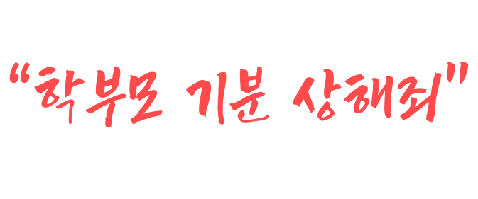
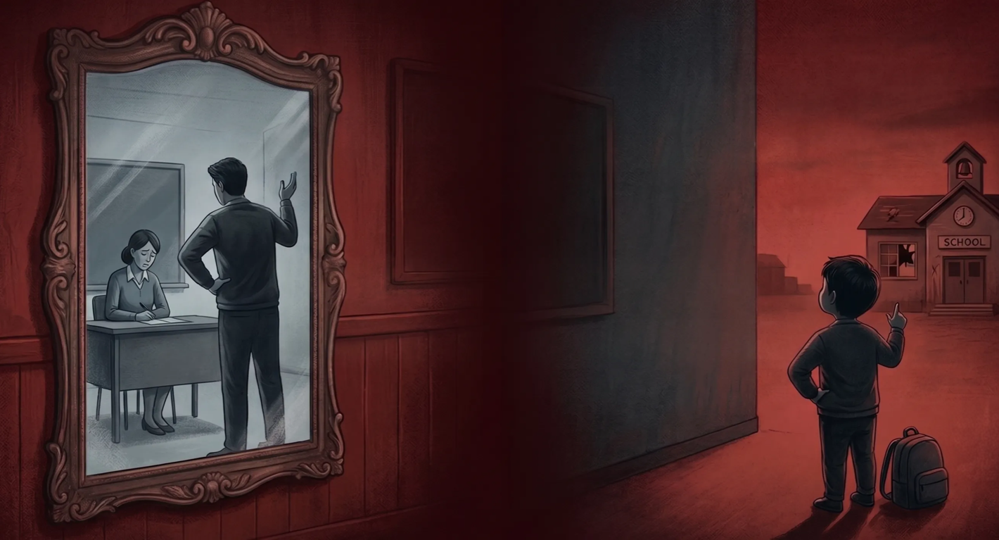

대한민국 법전에도 없는 새로운 죄목, '기분상해죄'
단순한 훈육조차 학부모의 기분에 따라
'정서적 아동 학대'라는 무기로 변해 교사의 숨통을 조이고 있습니다.
일상화된 악성 민원의 폭격
우리 애는 샌드위치 싸 왔는데,
선생님은 왜 김밥 드시면서 같이 먹자고 안 하셨어요?"
선생님은 왜 김밥 드시면서 같이 먹자고 안 하셨어요?"
저 지금 바쁜데, 선생님 김밥 사실 때 우리 애 것도
같이 사다 주시면 돈 보내드릴게요.
같이 사다 주시면 돈 보내드릴게요.
현장학습 가는 길, 오는 길 동선마다 지도 캡처해서
횡단보도 위치까지 안전 체크 확실히 보고해 주세요.
횡단보도 위치까지 안전 체크 확실히 보고해 주세요.
아이들 상처받지 않게 가위바위보는 무조건
무승부로 끝나게 조작해 주세요.
무승부로 끝나게 조작해 주세요.
현장학습 사진 200장 중에 왜 우리 애 사진은 5장밖에 없나요?
아이 표정은 또 왜 이렇죠?
아이 표정은 또 왜 이렇죠?
어린이집에서 우리 아이 옷에 묻은 물감, 선생님이 빨아 오세요.
벼랑 끝에 선 선생님들
출처: 초등교사노동조합 교권 침해 실태조사 (2023.07), 교육부 제출 자료 (국회 교육위원회, 2025.10)
99%
교권 침해 실태 설문 참여자 2,390명 중 99%가 "교권 침해를 당한 적이 있다"고 응답
떠나는 이들
최근 1년간 우울증 및 공황장해 진단 교사 급증
3,119명 - 2024년 국공립 초등교사 명예퇴직 수치

부모는 아이의 거울입니다
부모가 교사를 무시하고 아랫사람 대하듯 하는 태도.
그 모습은 고스란히 아이들의 ‘교실 내 폭력’으로 이어집니다.
권위가 아닌 공포가 된 교실
"선생님이 뭔데요?
우리 엄마한테 다 이를 거예요"
타이르는 교사에게 내뱉는 아이의 첫마디는 배움이 아닌 '협박'입니다.
부모의 갑질을 학습한 아이들은 선생님을 자신보다 낮은 존재로 규정합니다.
훈육에 불만을 품은 학생의 무차별 신체 폭행과 상해
폭행당하는 선생님을 휴대전화로 촬영하며 비웃는 동급생들
"선생님이 다 하세요" - 쓰레기를 투척하며 당연하게 요구하는 무력한 방관
급증하는 교사 폭행 사건
출처: 교육부 '교육활동 침해 현황' (2023 국정감사 제출 자료)
사회가 묵인하는 사이, 불과 3년 만에 교사 폭행 사건은 4배 이상 급증했습니다.
선생님들의 희생
62명
최근 3년간 스스로 생을 마감한 교사 수
2021년부터 2023년 상반기(약 2년 6개월)까지
스스로 목숨을 끊은 초·중·고 교사는 총 62명으로 집계
스스로 목숨을 끊은 초·중·고 교사는 총 62명으로 집계
“더 이상 버틸 수 없는 것 같습니다”
2024년 명예퇴직자 3,119명.
사명감으로 버티던 교단은 이제
‘생존’을 걱정해야 하는 공간이 되었습니다
사명감으로 버티던 교단은 이제
‘생존’을 걱정해야 하는 공간이 되었습니다
낙하산 없는 추락
무고성 아동학대 신고
무죄 판결까지 걸리는 수개월의 고통. 그 사이 교사의 커리어는 박살납니다.
보호막 없는 제도
학부모 민원을 교사 개인이 직접 받아내야 하는 처참한 시스템적 결함.
번아웃의 굴레
사명감은 냉소로 바뀌고, 교육은 이제 '생존'의 문제가 되었습니다.
절망의 타임라인
정당한 훈육
아이를 바른 길로
이끌기 위한 교육적 지도
악성 민원 폭탄
“우리 애 기분 상했다”
밤낮없는 집요한 항의
아동학대 고발
수개월간 이어지는
경찰 조사와 직위 해제
자괴감 번아웃
사명감의 소멸,
극단적 선택의 벼랑 끝